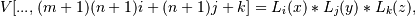
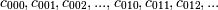
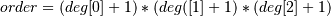

numpy.polynomial.legendre.legvander3d¶
- numpy.polynomial.legendre.legvander3d(x, y, z, deg)[source]¶
Pseudo-Vandermonde matrix of given degrees.
Returns the pseudo-Vandermonde matrix of degrees deg and sample points (x, y, z). If l, m, n are the given degrees in x, y, z, then The pseudo-Vandermonde matrix is defined by

where 0 <= i <= l, 0 <= j <= m, and 0 <= j <= n. The leading indices of V index the points (x, y, z) and the last index encodes the degrees of the Legendre polynomials.
If V = legvander3d(x, y, z, [xdeg, ydeg, zdeg]), then the columns of V correspond to the elements of a 3-D coefficient array c of shape (xdeg + 1, ydeg + 1, zdeg + 1) in the order

and np.dot(V, c.flat) and legval3d(x, y, z, c) will be the same up to roundoff. This equivalence is useful both for least squares fitting and for the evaluation of a large number of 3-D Legendre series of the same degrees and sample points.
Parameters : x, y, z : array_like
Arrays of point coordinates, all of the same shape. The dtypes will be converted to either float64 or complex128 depending on whether any of the elements are complex. Scalars are converted to 1-D arrays.
deg : list of ints
List of maximum degrees of the form [x_deg, y_deg, z_deg].
Returns : vander3d : ndarray
The shape of the returned matrix is x.shape + (order,), where . The dtype will be the same as the converted x, y, and z.
Notes